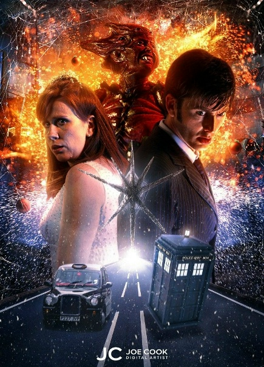
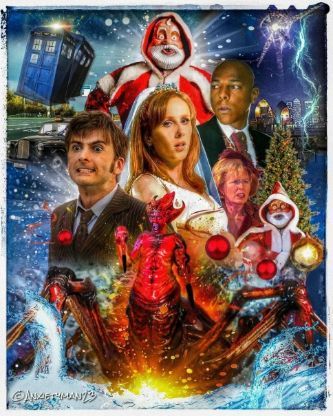

Эра Десятого Доктора
<<< НАЗАД ||| Сбежавшая невеста ||| ДАЛЬШЕ >>>
или
<<< НАЗАД к спин-офф сериалу "Торчвуд"
MVO [TVShows] 2.0 + 5.1, [Кириллица] Sci-Fi, [Baibako], DVO [Канал НСТ]
+ Original [ENG]
Субтитры: Русские {TrueTransLate} и Английские

The Runaway Bride
рождественский спецвыпуск
25 декабря 2006
Формат: 60-минутный эпизод
| Варианты озвучек: | * Разные: смотрите по инструкции чаще всего это нулевая серия третьего сезона |
|---|---|
| Скачивание и просмотр: |
Это первая серия, которая ввела понятие «разового» спутника Доктора, которой изначально и задумывалась Донна Ноубл. Тем не менее, она позже стала полноправной спутницей в 4 сезоне. Последующие рождественские спецвыпуски с Десятым Доктором продолжат традицию «разовых спутников».




